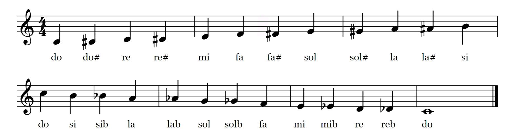

Intervalos
Os intervalos são a distância entre duas notas musicais e são uma das partes mais importantes da teoria musical. Eles influenciam diretamente o som das escalas, acordes e melodias, e ajudam a dar a sensação de tensão ou resolução na música.
O Que é Um Intervalo?
Um intervalo é medido contando a distância entre duas notas. Essa distância é geralmente medida em termos de graus, onde cada nota é contada como um degrau. Por exemplo, se você começar em C (Dó) e subir até E (Mi), o intervalo seria de uma terça (três notas: C, D, E).
Sustenidos e Bemóis
Antes de avançarmos com os intervalos, é importante entender os conceitos de sustenidos (representados pelo símbolo ♯) e bemóis (representados pelo símbolo ♭). Esses símbolos indicam que uma nota foi alterada em um semitom.
Um sustenido eleva a nota em um semitom. Por exemplo, a nota C♯ (Dó sustenido) está um semitom acima de C (Dó). Já o bemol abaixa a nota em um semitom. Por exemplo, E♭ (Mi bemol) está meio tom abaixo de E (Mi). Dois semitons formam um tom, que é a distancia entre duas notas, como por exemplo, D(Ré) esta um tom a cima de C(Dó)
Com isso em mente, é importante lembrar que uma escala completa envolveria todas as notas que ja conhecemos, mais as notas entre elas.
Esses símbolos são frequentemente usados em partituras e escalas para ajustar a altura de uma nota. Também é importante notar que certas notas podem ser chamadas de diferentes maneiras dependendo do contexto musical. Por exemplo, C♯ e D♭ (Ré bemol) são notas enarmônicas, o que significa que são tocadas na mesma altura, mas escritas de forma diferente.
|  |
|---|
Classificação dos Intervalos
Os intervalos são classificados em duas categorias principais: qualidade e número. O número indica quantos graus existem entre as duas notas (segunda, terça, quarta, etc.), e a qualidade pode ser perfeita, maior, menor, aumentada ou diminuta.
- Perfeito: Intervalos de 4ª, 5ª e 8ª (oitava) podem ser perfeitos.
- Maior ou Menor: Intervalos de 2ª, 3ª, 6ª e 7ª podem ser maiores ou menores.
- Aumentado ou Diminuto: Intervalos podem ser aumentados (um semitom a mais) ou diminutos (um semitom a menos).
Por exemplo, a distância entre C (Dó) e G (Sol) é uma quinta perfeita. Já entre C (Dó) e E (Mi), a distância é uma terça maior.
Aqui estão alguns exemplos de intervalos comumente usados:
- Segunda maior (2M): C para D
- Terça maior (3M): C para E
- Quarta justa (4J): C para F
- Quinta justa (5J): C para G
- Sexta maior (6M): C para A
- Sétima maior (7M): C para B
- Oitava (8ª): C para C (uma oitava acima)
Intervalos Maiores e Menores
Como mencionado, intervalos como segundas, terceiras, sextas e sétimas podem ser maiores ou menores. Quando diminuímos um intervalo maior em um semitom, ele se torna menor. Por exemplo:
- De C a E é uma terça maior (3M).
- De C a E♭ é uma terça menor (3m).